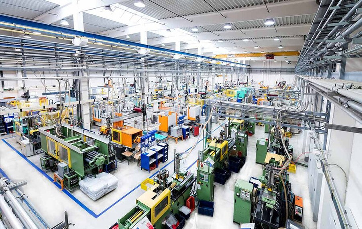

Our mechanical systems design and inspection services ensure that industrial and commercial systems are designed, installed and maintained with the highest standards of safety, functionality and reliability. We offer comprehensive inspection services to ensure compliance with SEMA standards for warehouse pallet racks, supervise the construction and installation of new systems, and provide custom fabrication for various mechanical components tailored to meet your operational needs.

We specialize in the custom design, manufacturing and assembly of high-quality industrial machinery and systems. Advanced fabrication techniques — including welding, metalworking and assembly — deliver reliable, durable equipment tailored to the demands of your industry. From prototype creation to large-scale production, we ensure precision and quality at every stage.

We focus on enhancing the lifespan, performance and reliability of your industrial systems and machinery through proactive maintenance planning, reliability assessments for critical equipment, and on-site repair for heavy industrial machinery. The goal is to minimise downtime, reduce maintenance costs and keep equipment operating efficiently over the long term.
Share your specification or your downtime problem — our mechanical team will propose an approach.